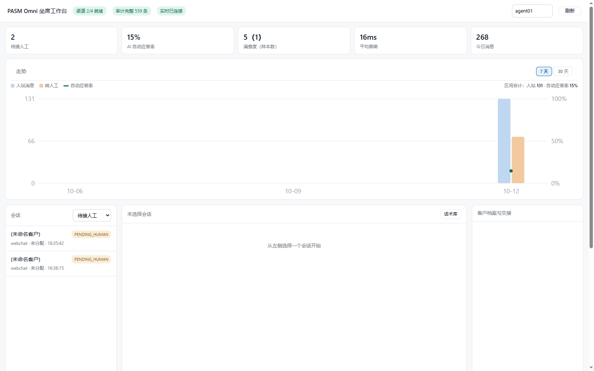
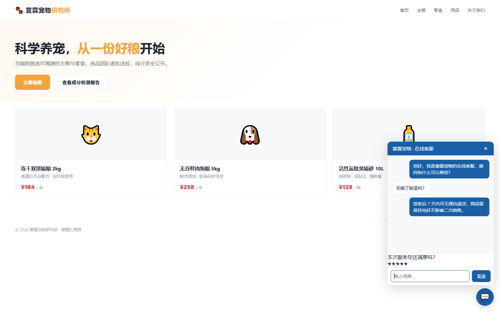

PASM Omni 是一个可私有化部署的客户系统内核：网页挂件一行代码接入任意站点， 外部系统一条 HTTP 请求即成为新渠道。反幻觉闸门保证 AI 只说知识库里有的内容， 全链路审计 hash 链保证每一条消息可溯源。整个系统同时是一个 MCP 服务，可被 WorkBuddy / Claude / Cursor 直接调用。
免费部署到你自己的服务器，功能完整、零第三方依赖（纯 Python 标准库）。 单文件数据库，数据完全私有。适合先跑起来验证效果。
商业授权交付，含技术支持、渠道资质协助、PASM 认知大脑授权与深度定制。 源码不随公开发布，交付方式另议。适合正式商用的企业客户。
渠道层、会话层、大脑层、资产层、营销层、数据层、治理层——各层可独立替换，加渠道不改一行内核。
网页挂件、Email、Telegram、企业微信、通用外接口内置；自定义渠道注册即用，第三方包可独立发版。
所有渠道汇到一个工作台。坐席抢单防撞单、交接摘要自动生成、会话状态机全程可观测。
AI 接待员 7×24 首响，AI 助手副驾坐席。反幻觉三重闸门：检索面 → 置信度 → 越界检测。
答不上来就转人工，绝不编造。抽取式应答直接引用知识库原文，不可能说出库里没有的内容。
标签体系、客户分层（VIP/沉默/流失风险）、访客轨迹、自动标签规则，入站即打标。
坐席快捷回复一键发送、使用次数统计；会话级满意度评价（CSAT），可改判。
AI 应答率、平均首响、满意度、会话/客户分布、今日消息量——工作台看板实时可见。
审计 hash 链（改一条即全链暴露）、工具级 RBAC 默认拒绝、群发多重合规闸门。
以下截图均来自实际运行的系统——左边是坐席工作台，右边是访客在任意网站上看到的挂件。


不必替换你现有的客服系统——只把 AI 能力挂上去。
实现 normalize / send / health 三个方法，一行 register() 即成为正式渠道，内核零改动。
渠道可独立打成 pip 包、独立发版，主程序运行时加载，渠道生态与内核解耦。
任何语言、任何已有系统，POST 一条 JSON {channel, external_id, text} 即接入；出站可配转发地址。
<script src="https://你的服务器/widget.js" data-api="https://你的服务器"></script>
pasm-omni --db omni.db serve（零依赖）pasm-omni --db omni.db seedpasm-omni --db omni.db servepasm-omni --db omni.db serve-mcp，AI 客户端直接调用 30 个工具# 一条命令验证整条链路（演示模式） $ pasm-omni --db omni.db demo # 输出示例 这个能退货吗 自动应答 0.75 → 签收后 7 天内可无理由退货… 你们老板是谁 转人工 0.00 → 这个问题我需要确认一下，正在为你转接人工客服。 # 校验审计链完整性 $ pasm-omni --db omni.db verify { "ok": true, "total": 42 }